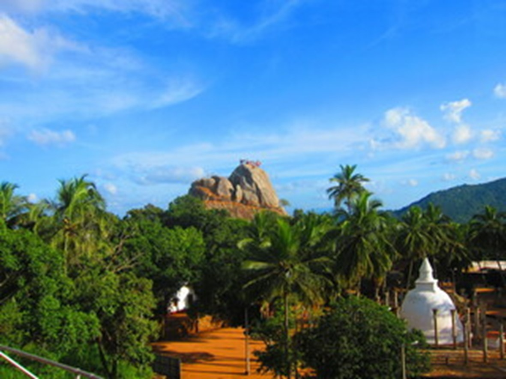
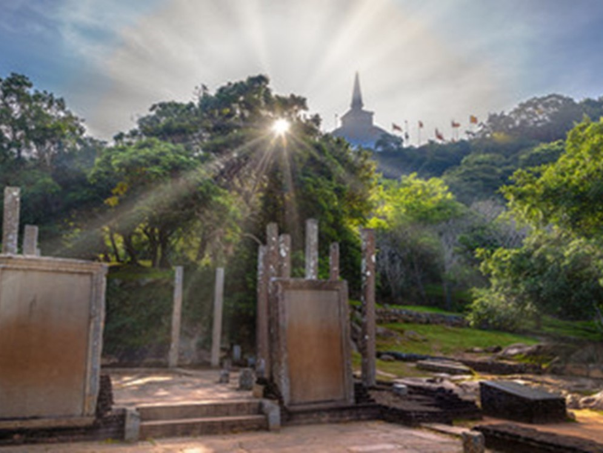
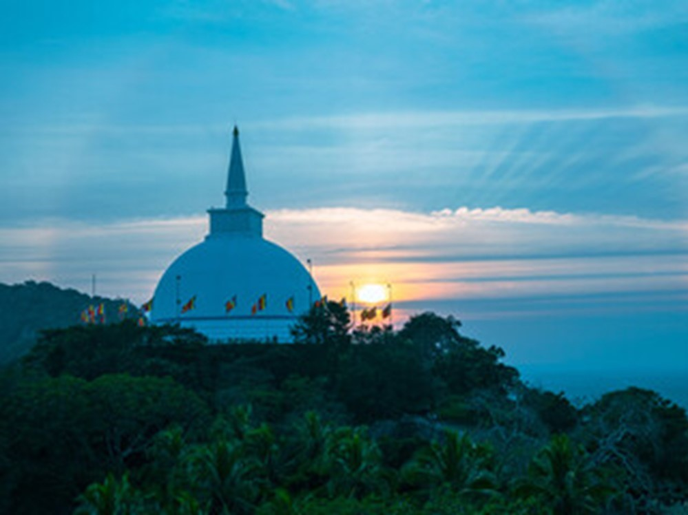
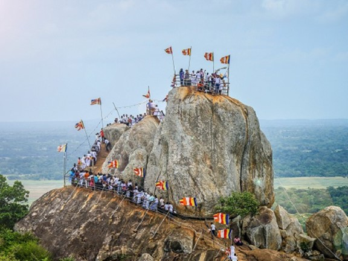
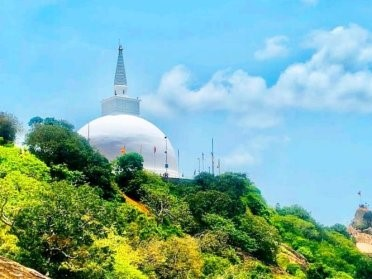
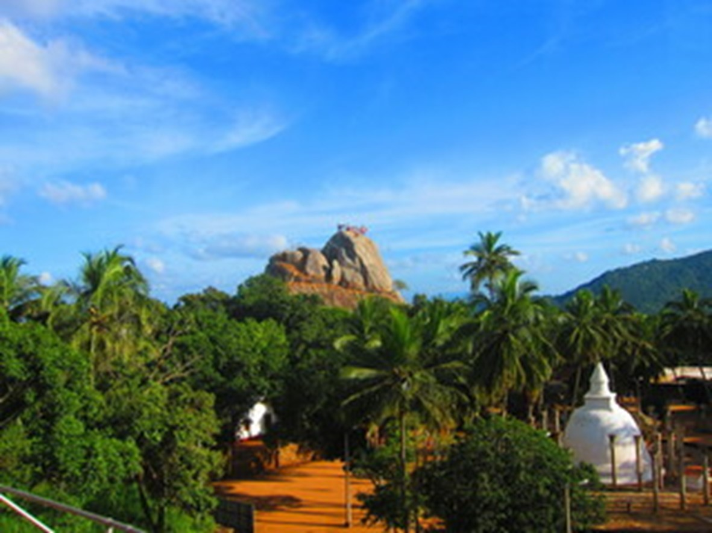
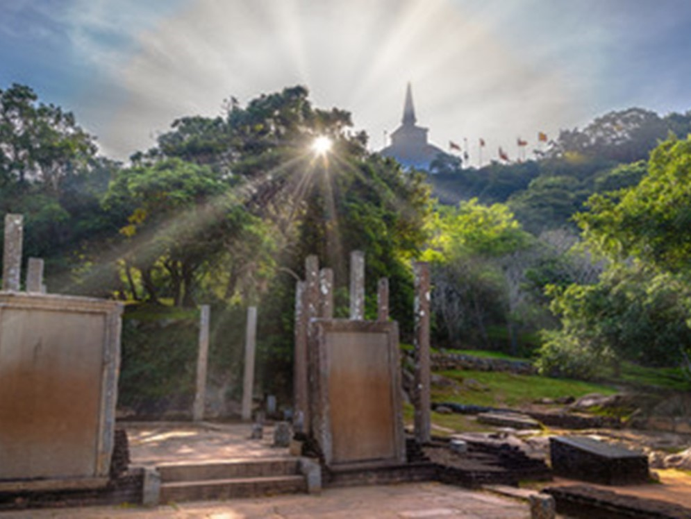
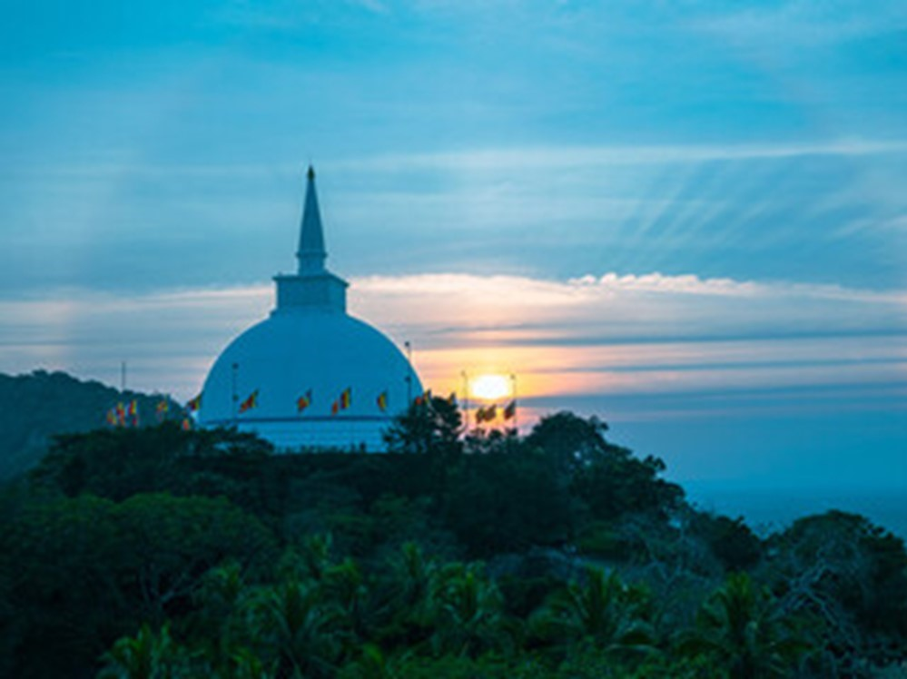
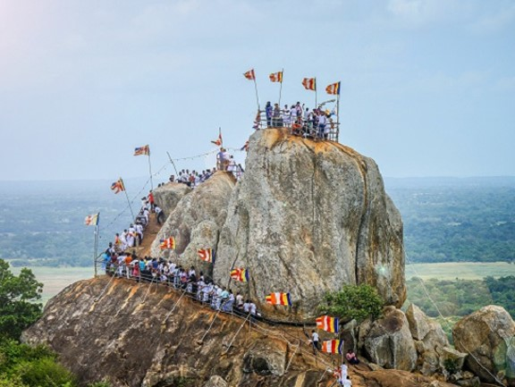
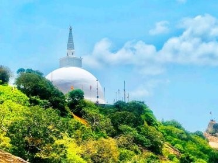

Overview
Approximately 12.5 km (7.8 mi) east of Anuradhapura, near the Anuradhapura-Trincomalee Road, lies "Missaka Pabbata," a 1,000-foot (300 m) peak in a mountainous range. According to the ancient chronicles Dipavamsa and Mahavamsa, Thera Mahinda arrived in Sri Lanka from India on the full moon day of the month of Poson (June). He met King Devanampiyatissa and preached the Buddhist doctrine at a traditional spot revered by Sri Lankan Buddhists. Therefore, during the month of Poson, Buddhists make a pilgrimage to Anuradhapura and Mihintale.
Mahinda, the son of Emperor Ashoka of India, played a pivotal role in spreading Buddhism. Ashoka embraced Buddhism after being inspired by a monk named Nigrodha. The king, distressed by the devastation caused by his expansionist wars, found solace in the peaceful teachings of Nigrodha. This encounter was a turning point, leading Ashoka to renounce war and dedicate himself to spreading the message of peace. Consequently, both his son and daughter were ordained as Buddhist monastics and became enlightened Arahats. In his quest to propagate peace, Ashoka sent his son Mahinda to the island of Lanka, known as "Sinhalé," which was ruled by his friend King Devanampiyatissa. Mahinda's name in Sinhala became "Mihindu."
In Sinhala, Mihin-Thalé means the "plateau of Mihindu." This plateau, situated atop a hill, is where Arahat Mihindu is said to have called out to King Devanampiyatissa to stop him from shooting a deer. Thus, “Mihin Thalé” is a uniquely Sinhala term.
From ancient times, large steps were constructed to ascend Mihintale. It is recorded that King Devanampiyatissa built a vihara and 68 caves for the bhikkhus to reside in. Over time, Mihintale developed into a significant site with numerous Buddhist monasteries or viharas, complete with the characteristic buildings of that period.
Gallery
 









Location
Mihinthalaya Rajamaha Viharaya is located at...
Contribution
Contribution Message
Rajarata University of Sri Lanka, Department of Marketing Management
Project Name: Smart Guide
We are delighted to announce the launch of "Smart Guide," an innovative project developed by the 2022 batch of the Department of Marketing Management at Rajarata University of Sri Lanka. Smart Guide aims to enhance the experience of pilgrims and tourists visiting the historic site of Mihintale by providing detailed, interactive information about its historical and religious significance. This project helps preserve and promote Sri Lanka's rich cultural heritage while serving as an educational resource for students and history enthusiasts. Additionally, Smart Guide supports the local economy by attracting more visitors and promoting sustainable tourism. Leveraging modern technology, this project sets a benchmark for future initiatives, embodying our commitment to continuous improvement and innovation. We are proud to contribute to the community by fostering education, cultural appreciation, and economic development through Smart Guide.